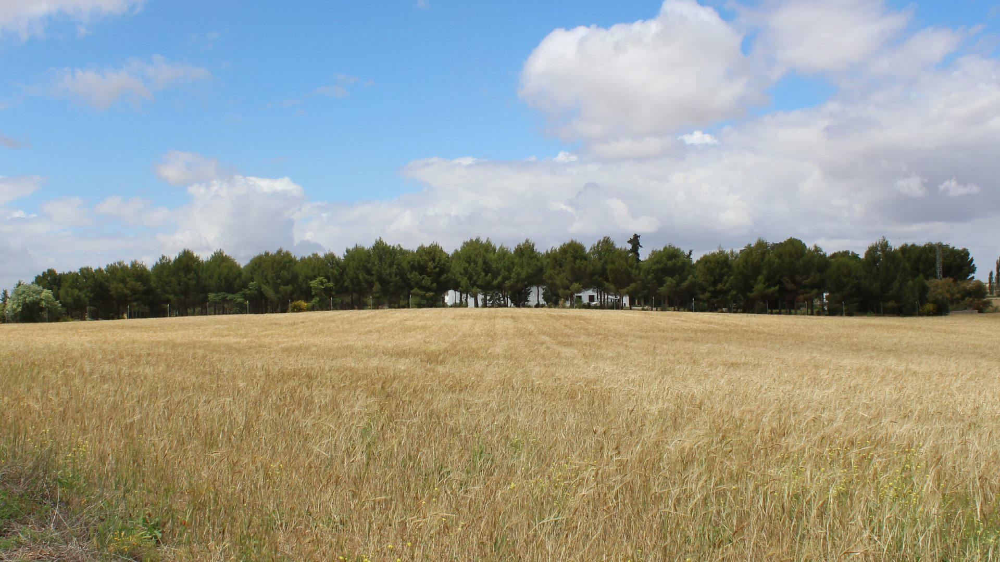
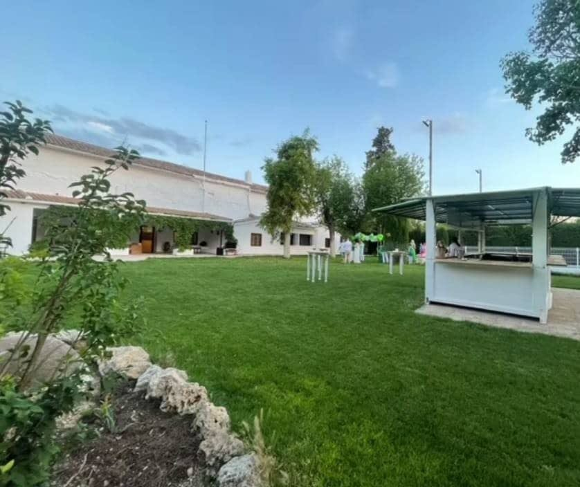
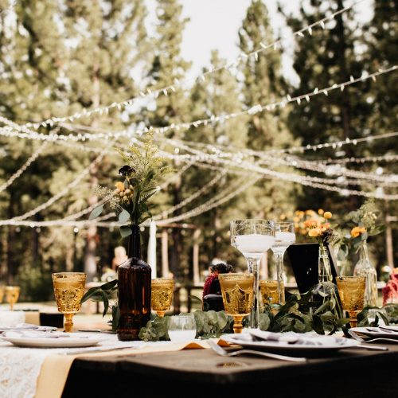
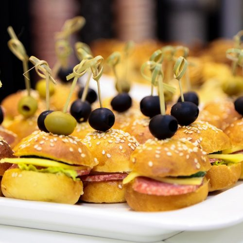
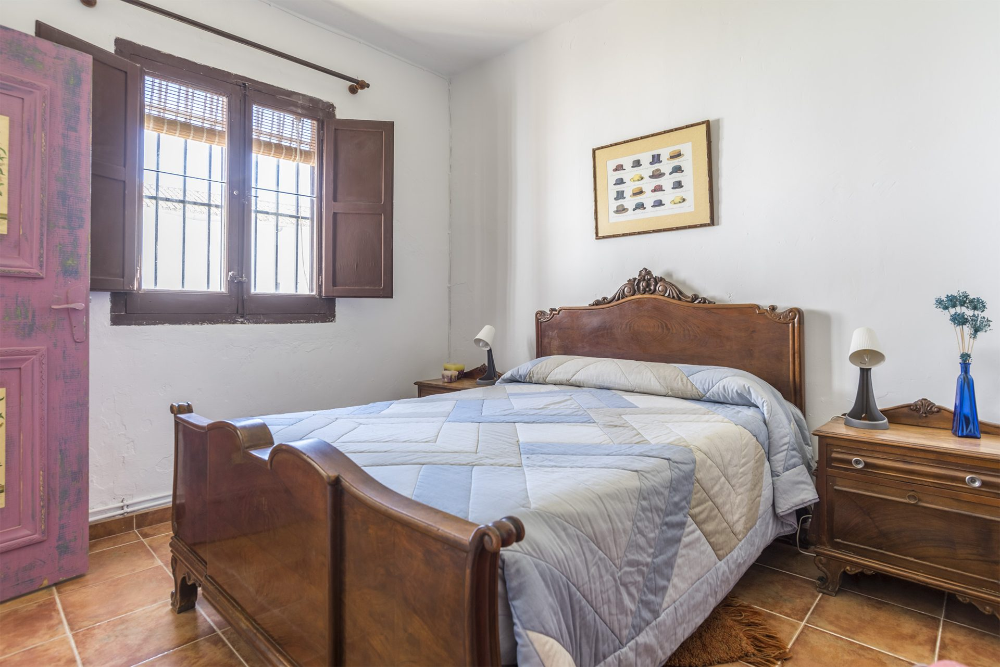
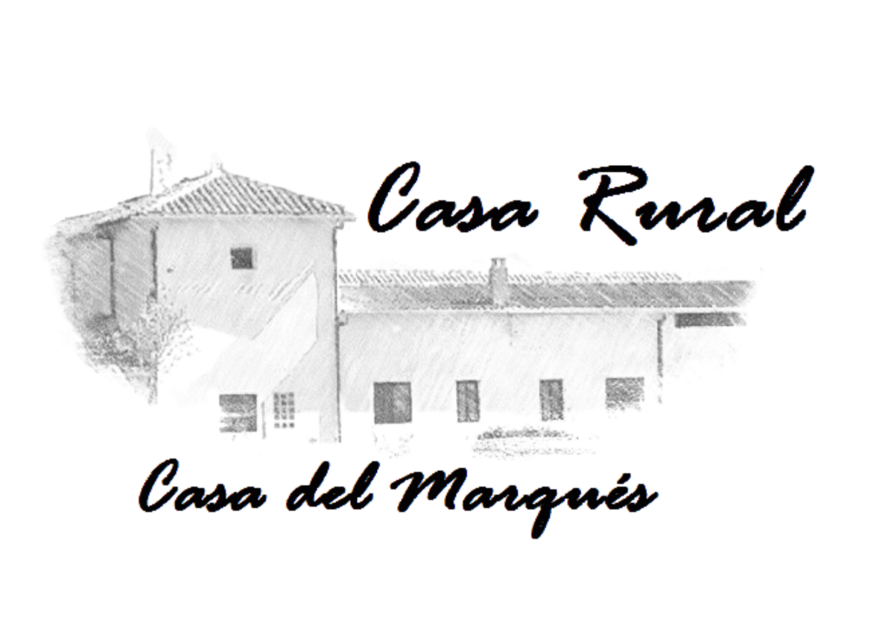
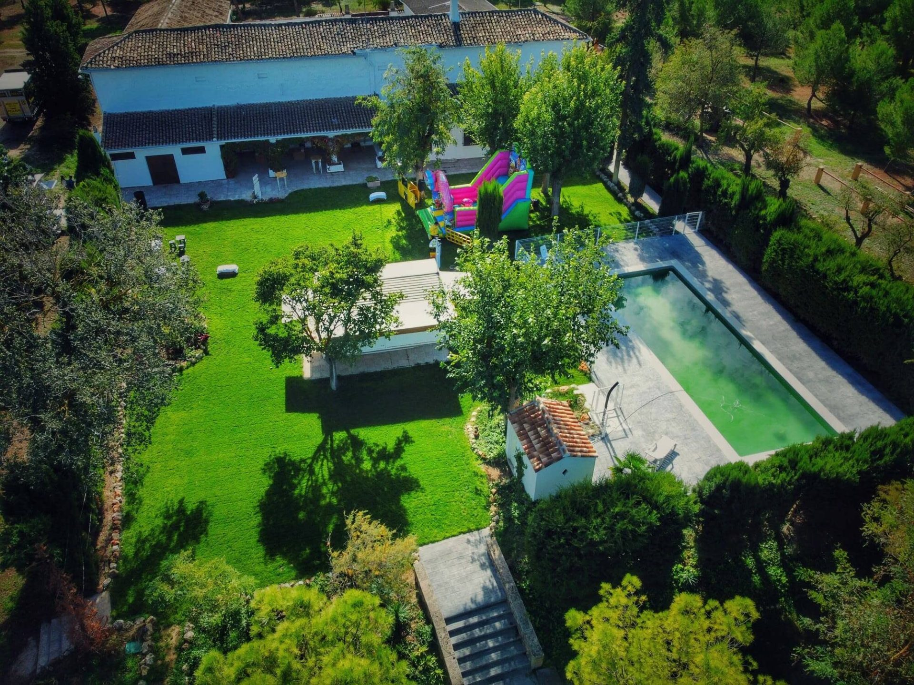

Bienvenidos a la Casa del Marqués
Casa del Marqués en Horcajo de Santiago, Cuenca

Vuestra boda en una finca histórica, solo para vosotros
Hasta 300 invitados, 30.000 m² de jardines y alojamiento en la propia finca, a una hora de Madrid. Desde 20 € por invitado.

Realiza tus eventos en la Casa del Marqués
Descubre la Casa del Marqués en Horcajo de Santiago, Cuenca, un tesoro histórico convertido en una casa rural de ensueño. ¡El lugar perfecto para eventos inolvidables! Sumérgete en su encanto único, donde el pasado se combina con la comodidad moderna, creando una experiencia excepcional y llena de magia.
Nuestros servicios

Eventos
Bodas, bautizos, comuniones, cumpleaños, team building, reuniones de grupo… y todo lo que quieras celebrar rodeado de naturaleza.
Saber más →
Catering
Te ponemos en contacto con las empresas de catering de confianza con las que trabajamos.
Saber más →
Casa Rural
Hasta 14 plazas en una casa histórica en plena naturaleza, con piscina, chimenea y grandes jardines.
Saber más →Nos han concedido este premio
Nuestros huéspedes nos valoran con un 9,9 sobre 10 en Booking.com, lo que nos ha valido el Traveller Review Award 2025. ¡Gracias a todos los que nos habéis visitado!
Ver los premios de Booking
Conoce nuestra Casa Rural
Ideal para un grupo familiar o de amigos. Su ubicación en el campo, lejos del núcleo urbano, crea un ambiente de gran intimidad e independencia que, junto con el silencio, invita a disfrutar del lugar de una manera muy distinta.
- 5 dormitorios y salón con chimenea
- Piscina y 30.000 m² de jardines
- Planta baja y accesible

En plena Mancha conquense, a un paso de Madrid
La Casa del Marqués está en el campo de Horcajo de Santiago (Cuenca), rodeada de campos de cereal, dentro de la Zona de Especial Protección para las Aves «Área Esteparia de la Mancha Norte».
- A algo más de una hora en coche de Madrid
- Muy cerca de Tarancón, Uclés y Quintanar de la Orden
- Junto al Parque Arqueológico de Segóbriga y el Monasterio de Uclés
Preguntas frecuentes
¿Cómo puedo saber el precio?
No tenemos tarifas cerradas: cada evento o estancia se presupuesta de forma personalizada. Escríbenos con la fecha aproximada, el número de personas y lo que quieres celebrar, y te enviamos un precio sin compromiso.
¿Se puede reservar o pagar desde la web?
No. Preferimos hablar contigo directamente para entender lo que necesitas. Escríbenos por el formulario, WhatsApp o teléfono y te atenderemos personalmente.
¿Qué tipo de eventos se pueden celebrar?
Bodas, bautizos, comuniones, cumpleaños, despedidas de soltero/a, reuniones familiares, jubilaciones, retiros, actividades de team building y reuniones de grupo o de empresa… ¡y lo que quieras celebrar! Disponemos de 30.000 m² de jardines y praderas.
¿Hay servicio de catering?
Trabajamos con empresas de catering de confianza y te ponemos en contacto con ellas para que elijas el menú que mejor se adapte a tu celebración y a tu presupuesto.
¿Organizáis eventos de empresa o team building?
Sí. La finca es ideal para jornadas de team building, reuniones de grupo y encuentros de empresa en plena naturaleza, con 30.000 m² de jardines y praderas. Cuéntanos qué necesitas y te preparamos una propuesta.
¿Cuántos invitados caben en un evento?
Hasta 300 invitados. Además, parte de ellos puede alojarse en la casa rural de la finca.
¿Cuántas personas caben en la casa rural?
La casa rural tiene 10 plazas en 5 dormitorios, ampliables con 2 sofás cama de matrimonio (4 plazas más) y una cuna de viaje.
¿Es accesible?
Sí. La casa está en planta baja y cuenta con aseos adaptados.
¿Dónde está la Casa del Marqués?
En pleno campo, en el término municipal de Horcajo de Santiago (Cuenca), en la Mancha conquense, dentro de una Zona de Especial Protección para las Aves (ZEPA) de la Red Natura 2000. Está a algo más de una hora en coche de Madrid y muy cerca de Tarancón, Uclés y el Parque Arqueológico de Segóbriga. Te enviamos la ubicación exacta al contactar.
Tu precio, a tu medida
Cada celebración y cada estancia es distinta. Cuéntanos qué tienes en mente (fechas, número de personas, tipo de evento) y te preparamos un presupuesto personalizado sin compromiso.